If you already have a powerful personal agent, the Sogni Creative Agent Skill is the easiest and most capable way into the platform. Ask in plain English and your agent plans the job, generates the assets, and delivers finished images, video, and music straight to your workspace.
Zero to first renderNo install, free Spark on sign-up, first image in seconds.
200+ modelsOpen-source on the Supernet, plus premium partners.
Free to startFree Spark on sign-up, plus a 3-day Unlimited trial.
Guide · Getting started
Sogni Create, step by step: from your first prompt to images, video and music
By Sogni Team·July 2026
The complete walkthrough of the app.sogni.ai web app. How the home screen works, how to generate your first images in seconds, how to pick models and styles, how to compare models side by side, how to create video and music, and how Spark points and the Supernet power all of it.
Sogni is not a single app. It is a family of apps sharing one account, one gallery and one Spark balance, all rendering on the same Sogni Supernet, so whatever you make in one shows up in the others. Here is the lineup, and then the short answer on where to start.
The Mac-native creative workspace. Generate at full Supernet speed or entirely on-device, which means private and offline. Studio Pro adds Worker Mode, so your idle GPU earns from the network. Needs macOS Sonoma 14, Apple silicon and 16 GB RAM.
The full thing on iPhone and iPad, again with Supernet or on-device generation. Needs iOS 17 and an iPhone 13 Pro or newer, or an iPad with Apple silicon.
Tell an agent what you want in plain English and it plans, generates and delivers finished images, video and music on the Supernet. It also installs as a skill inside Claude, Codex or Hermes, so it works straight from your terminal: npx setup-sogni-agent-skill
Generate sticker art directly in your community chats, on Discord or Telegram.
Windows and Linux builds are on the way and have a waitlist on the Super Apps page.
If this is your first time, start with the web app at app.sogni.ai. There is nothing to install, it runs on any machine including Windows and Linux, it has the full model library and every setting the desktop apps have, and your account, gallery and Spark balance carry over the moment you decide to add Studio on your Mac or Pocket on your phone. Learn it here once and you already know the others.
1Create your free account
Head to app.sogni.ai. You can browse freely, but the first time you hit a generate button you will be invited to sign up. It is free, takes under a minute, and comes with free Spark points so you can start creating right away, plus welcome rewards you can claim later (see step 18).
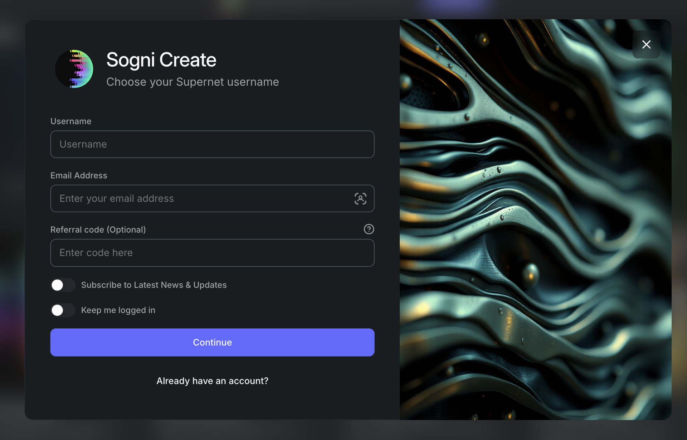
Signing up takes a username and an email. The referral code field is optional, and it is where a friend's Share & Earn link pays you both bonus Spark.
2The home screen
The home page greets you with "Your imagination, unlocked" and a row of tool cards. Every card is a creative mode: click one and you land directly in the right workspace, with no setup needed. The All / Image / Video / Audio filter narrows the cards to one category, and the two icons on the right switch between the carousel and the grid layout.
The left sidebar is your permanent navigation, top to bottom: Home, Create (images), Video, Music, Recent Projects, Wallet, Rewards and Help, which opens docs.sogni.ai. The moon icon at the bottom switches between light and dark theme.
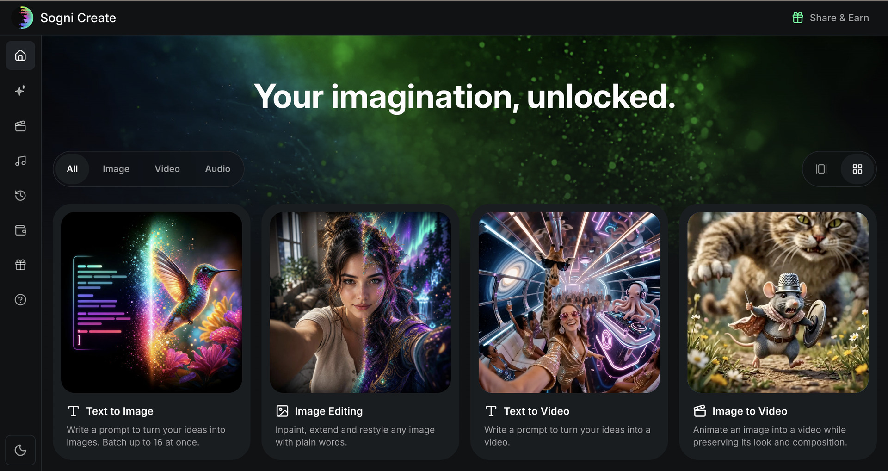
The home screen in carousel view. Drag sideways or use the arrow to browse through all the tools.
3Every tool at a glance
Switch to the grid layout using the right-hand icon above the cards and the whole toolkit is visible at once. Sogni Create is far more than an image generator: nine creative modes live in one app.
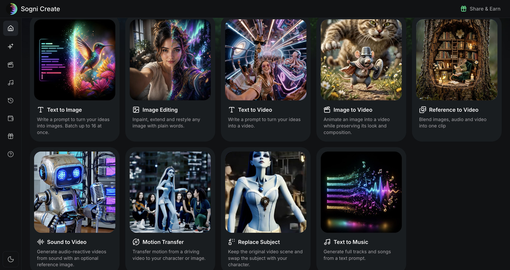
Grid view: all nine tools on one screen, each with a one-line description of what it does.
Tool
What it does
Text to Image
Turns a written prompt into images, up to 16 in a single batch.
Image Editing
Inpaint, extend and restyle any photo using plain words.
Text to Video
A text prompt becomes a video, up to 4K with generated audio.
Image to Video
Animates a still image while preserving its look and composition.
Reference to Video
Blends multiple reference images into a single video.
Sound to Video
Audio-reactive video generated from a sound clip.
Motion Transfer
Transfers motion from a driving video onto your character or image.
Replace Subject
Keeps the original video scene and swaps the subject for your character.
Text to Music
Generates full tracks and songs from a text prompt.
4Models, apps and community
Scroll down the home page and you will find three sections worth knowing before you start creating.
Featured Models is a curated shelf of new open-source and proprietary models: Krea 2 Turbo (fast images with strong aesthetics), Krea 2 Identity Edit (identity-preserving edits), Seedance 2.0 (the top proprietary video model, now in 4K), One Obsession (glossy 2.5D anime), Dark Beast (uncensored fine-tunes), Chroma, Flux Krea, Wan 2.2, LTX-2 and more. The full catalog lives at sogni.ai/models. A green "New" badge marks fresh arrivals, and a Premium badge marks the ones billed separately (see step 9).
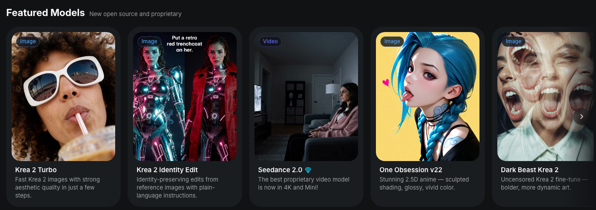
Featured Models. Every card tells you in one line what the model is best at.
More from Sogni collects companion apps built on the same engine: Sogni Infinity (seamless tiles that repeat forever), Sogni Chat (an AI agent that creates images and video inside a conversation), Sogni 360 (cinematic 360 degree orbital video from one photo), Photobooth (dozens of styled portraits from a selfie), Photo Restore (bring scratched and faded photos back to life), Sogni Makeover (try hairstyles and makeup instantly), the Creative Agent Skill (give your own agent Sogni image and video generation as tools) and API Access (render on the Sogni Supernet from your own product via SDK or API).
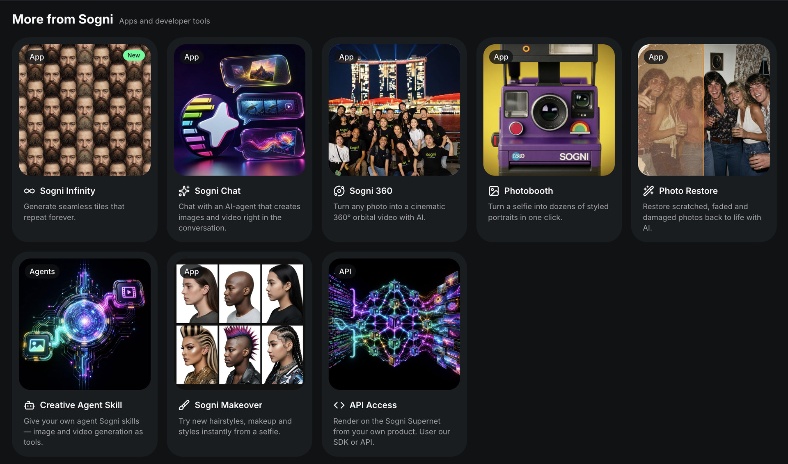
More from Sogni: companion apps, agent skills and developer tools.
Made with Sogni is a live feed of community creations, filterable by Images, Videos and Audio. It is the best source of inspiration and ready-made prompts: click any piece to see how it was made.
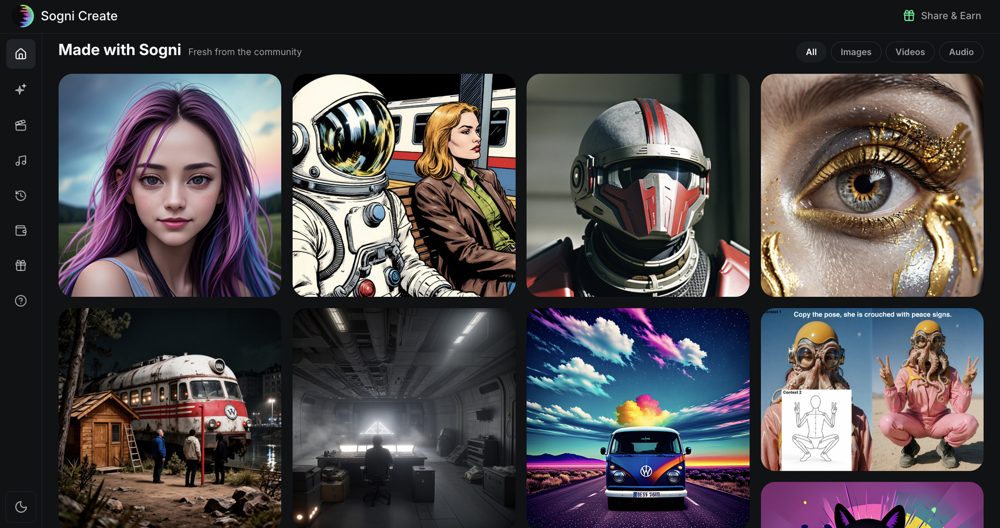
Made with Sogni, fresh from the community and updated continuously.
This is the heart of the app. The settings panel sits on the left and your results fill the canvas on the right. Everything needed for one generation reads top to bottom, in the order you actually make decisions: prompt, cost and batch, style, model, then the finer settings.
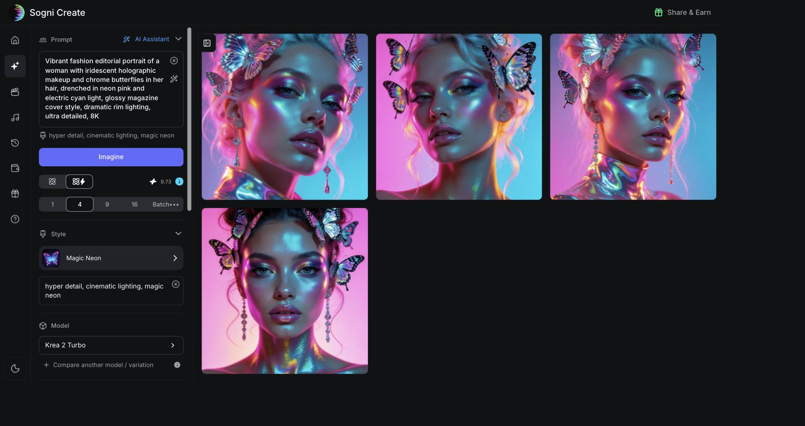
The full Create workspace: prompt, Imagine button, cost and batch row, Style, Model and settings on the left, with the finished batch on the right.
Three ways to write a prompt
1. Type your own. Describe subject, mood, lighting and style. The prompt used throughout this guide shows what the generator can do with color:
Vibrant fashion editorial portrait of a woman with iridescent holographic makeup and chrome butterflies in her hair, drenched in neon pink and electric cyan light, glossy magazine cover style, dramatic rim lighting, ultra detailed, 8K
2. Let the AI Assistant write it. With the toggle on, the app expands a short idea into a rich prompt automatically. The wand icon beside the box does the same on demand ("Enhance prompt with AI"), and the cross icon clears the prompt.
3. Borrow one. Click Use prompt on any inspiration card below the workspace and its full prompt lands in your box, ready to run or remix.
6Cost, speed and batch explained
The row right under the Imagine button holds the four controls that decide what your generation costs and how fast it arrives. Here is what each one means.
Control
What it means
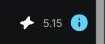
Estimated cost of this generation in Spark points, always shown before you click. It updates live as you change batch size, model, resolution or processing speed. The blue info button opens the Generation payment panel with the exact cost, your balance, the SOGNI Token and Spark Points switch, billing history and the Unlimited upgrade.
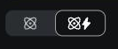
Processing speed, in other words which Supernet renders your job. The plain icon is the Relaxed Supernet, which is cheapest. The lightning icon is the Fast Supernet, which is priority processing at a higher price. See the box below.
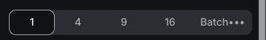
Batch size, meaning how many images render from one prompt at once. Batch••• opens Mega Batch for even larger runs. If you have several models selected for comparison, the panel spells out the math for you, for example "1 image per selected model or variation x 2 selections = 2 images total."
What is the Supernet?
Sogni does not own a central render farm. Your job is sent to the Sogni Supernet, a decentralized network where independent GPU operators around the world contribute compute and earn rewards for every completed render. That is why you see worker names such as @Nosana.network or @ceibo.ai printed on your tiles while they render, and it is the reason prices are a fraction of centralized services.
The network has two lanes. The Relaxed Supernet is the cheap lane: your job waits for a free worker. The Fast Supernet is the priority lane: your job jumps the queue and finishes sooner, at roughly double the price. The output quality is identical, so you are paying purely for waiting time. One practical detail: the newest models are only published to the Fast Supernet, so if you pick one while Relaxed is selected the app tells you and offers a one-click "Switch to Fast Supernet" button.
The price difference on the same batch, with only the speed toggle changed:
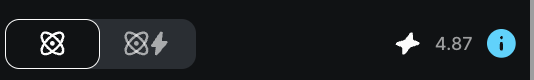
Relaxed Supernet: 4.87 Spark for a batch of 4.
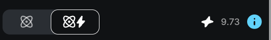
Fast Supernet: 9.73 Spark for the same batch of 4.
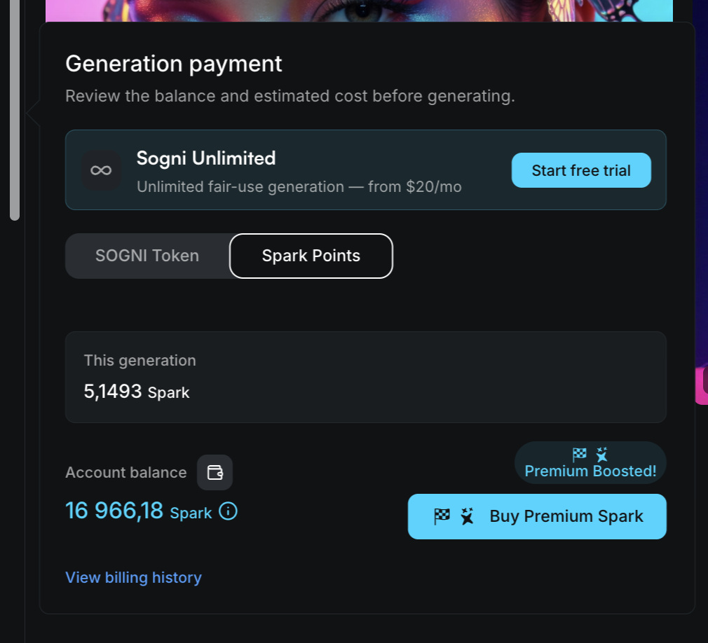
The Generation payment panel: the exact cost of this run, your Spark balance, the SOGNI Token and Spark Points switch, a shortcut to buy Premium Spark and a link to your billing history. You can start a Sogni Unlimited trial straight from here.
Pro tip: iterate on prompts on the Relaxed Supernet with a batch of 4, then switch to Fast for the final render. Same quality, lower spend while you experiment.
7Styles
The Style section applies a curated aesthetic on top of your prompt. Click it to open a searchable library of more than 130 ready-made styles: Abstract, Anime, Architectural, a full run of art periods (Abstract Expressionism, Art Deco, Art Nouveau, Baroque and more), photographic looks, neon looks and beyond. Every style shows a thumbnail plus the exact keywords it will append, so you always know what it is doing, and styles you have used recently stay pinned at the top under "Recent history".
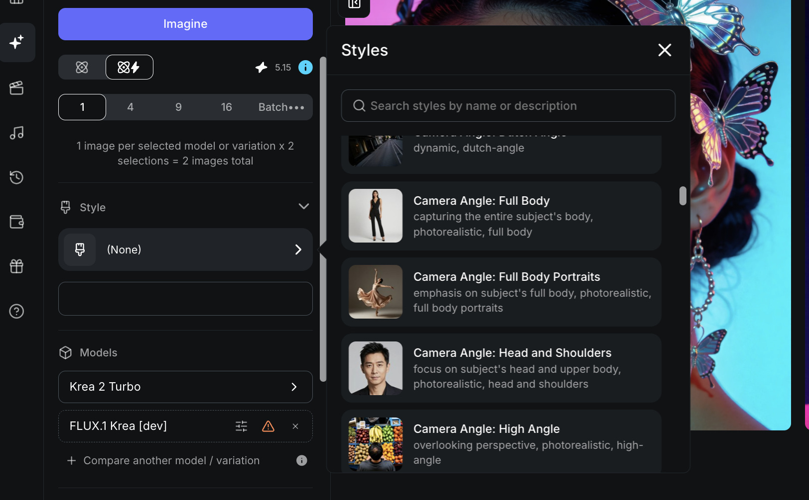
The Styles library: search by name or description, and every entry shows a thumbnail plus the exact keywords it appends. Here the Camera Angle family, from Full Body to Head and Shoulders.
Once you pick a style, its keywords land in an editable box directly underneath, so you can tweak or delete any of them before generating. For the holographic butterfly prompt in this guide Magic Neon is a natural match; below is Art Period: Art Nouveau with its own recipe loaded.
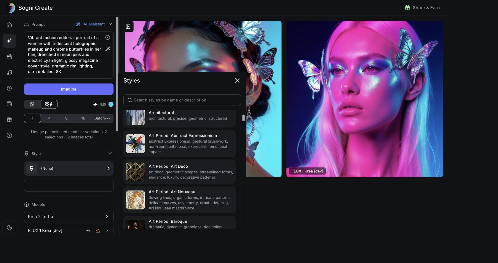
Scrolling the library reveals the art-period styles, each with a thumbnail and its keyword recipe.
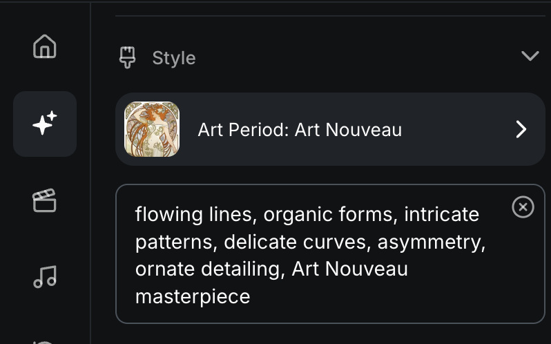
Art Nouveau selected: the keywords sit in an editable box, and the cross clears the style.
Pro tip: a short prompt plus a strong style often beats a long prompt with no style. To compare aesthetics fairly, keep one prompt fixed and swap only the style.
8Choosing a model
The Model section opens the full library, with search, category filters and a description of every model alongside sample images. Categories run from Next-Gen Diffusion (Krea 2 Turbo, Dark Beast, Chroma, Flux, Qwen Image, Z-Image) through Image Editing & Mixing (Krea 2 Identity Edit, GPT Image 2, Flux 2, Qwen Image Edit) to a deep SDXL shelf with dozens of community fine-tunes.
The default, Krea 2 Turbo, is a great starting point: a distilled, few-step version of the Krea 2 image model, tuned for fast text-to-image and image-to-image with strong aesthetic quality. It runs in roughly 8 steps and accepts a guide image.
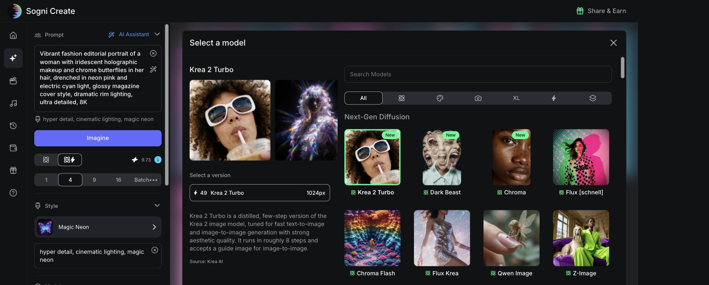
"Select a model": description, sample images and available versions on the left, the searchable library on the right.
9Which models are included and which cost extra
Not every model is billed the same way, and the badge next to the model name tells you which is which.
Open-source models running on the Supernet carry the small green Sogni mark. These are rendered by the decentralized GPU network, they are the cheapest option, and they are the ones covered by a Sogni Unlimited subscription under fair use. This group is large: on the image side it includes Krea 2 Turbo, Chroma, Chroma Flash, Flux [schnell], Flux Krea, Qwen Image, Z-Image, Dark Beast and the entire SDXL shelf, and on the video side it includes LTX 2.3 and Wan 2.2.
Premium commercial models carry a Premium badge. These are proprietary third-party models called through their vendor APIs rather than rendered on the Supernet, so they are billed separately and need Premium Spark, which you top up with a card. In the video picker these are Seedance 2.0 by ByteDance and HappyHorse 1.1 by Alibaba; on the image side the same rule applies to proprietary editors such as GPT Image 2. Every model has a page with prices and API IDs in the model catalog.
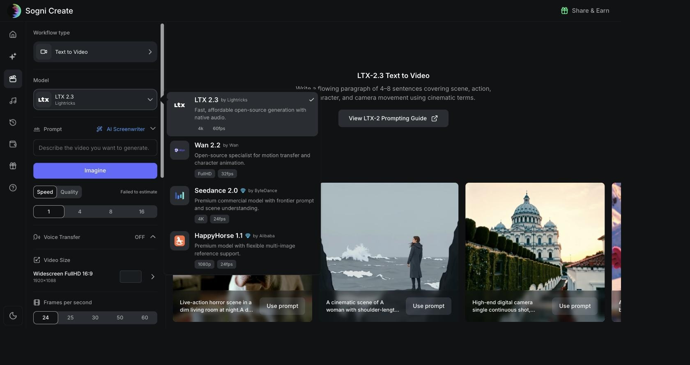
The video model picker makes the split obvious: LTX 2.3 and Wan 2.2 are open-source Supernet models, while Seedance 2.0 and HappyHorse 1.1 carry the premium badge.
In short: everything with the green Sogni mark runs on the Supernet and is covered by your Spark balance or your Unlimited subscription. Everything marked Premium is a commercial model billed on top, using Premium Spark. The live cost estimate above the Imagine button always reflects whichever you have selected, so there are no surprises.
10Compare models side by side
This is the feature that sets Sogni apart from most generators. Under the model field there is a + Compare another model / variation button. Add a second model (or a third, or a different version of the same model) and one click renders the same prompt with the same starting seed on all of them, side by side. No more generating separately and squinting between browser tabs.
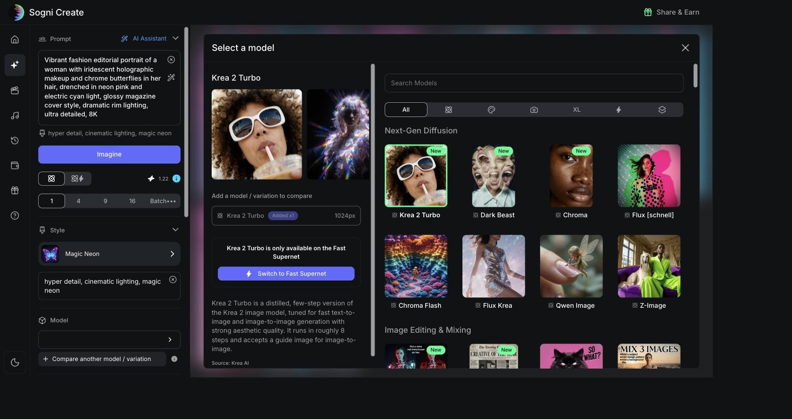
"Add a model / variation to compare". Note the notice that Krea 2 Turbo is only available on the Fast Supernet, with a one-click switch.
Here is the result: the identical prompt rendered by Krea 2 Turbo and FLUX.1 Krea [dev]. Each tile is labeled with the model that produced it, so the comparison is unambiguous.
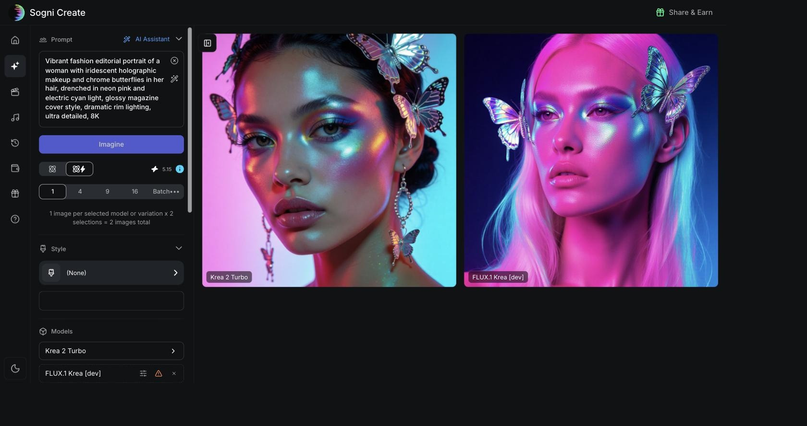
One prompt, two engines. Krea 2 Turbo (left) delivers a cooler, editorial studio look with sculpted rim light; FLUX.1 Krea (right) pushes deeper into saturated neon and softer skin rendering. Neither is more correct, and that is exactly the point of comparing.
Give each model its own settings
Every compared model has a sliders icon next to its name that opens a Customize panel. There you can override the Prompt, Style, Steps, Sampler and Scheduler for that model alone, and depending on the model also Avoid (the negative prompt) and Guidance. Leave everything on Auto and each model uses its own recommended values, which is almost always what you want. The gray text under each label tells you the range that model actually accepts, and it varies a lot: one engine will list steps 1 to 40, another 20 to 50 with guidance 1 to 7. If any of those names are unfamiliar, step 11 explains what each one does.
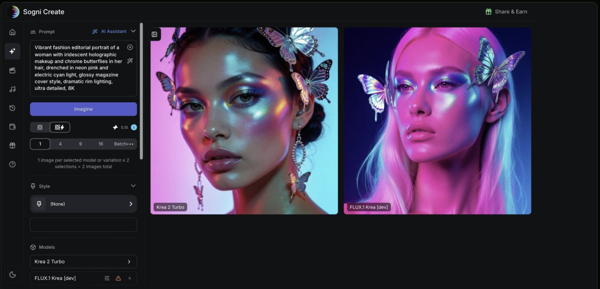
With two models selected the panel confirms the math, 1 image per model x 2 selections = 2 images total, and each entry gets a sliders icon. The warning triangle flags settings outside that model's range.
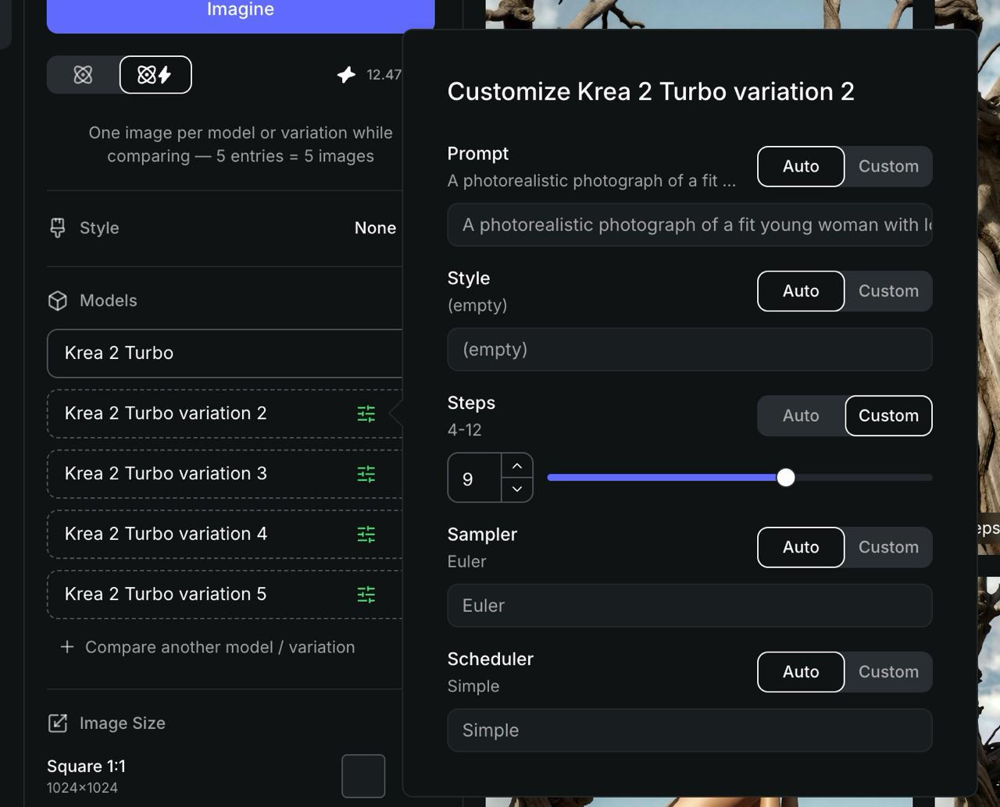
Five variations of one model, with Customize open on variation 2. Every row stays on Auto or is overridden for that entry alone; the accepted range sits under the label, Steps 4 to 12 here, set to a custom 9.
Watch the warning triangles. Models want very different settings, so a warning triangle appears next to a compared model when your global settings fall outside its recommended range. A turbo model is built for around 8 steps while a full-capacity model wants 20 to 50, and forcing one global step count on both gives you a clean image from one and a smeared, glitchy mess from the other. If you see a triangle, open Customize and put that value back on Auto.
Two pro tips. First: not sure which model suits your style? Set the batch to 1, add three or four models through Compare, and let one cheap run pick the winner, then switch to that model alone for a bigger batch. Second: styles do not land the same way on every engine. A heavy style such as Magic Neon can turn a turbo model's output into pure glitch while looking great on another, so when you are comparing engines it is cleaner to drop the style and let the prompt do the work.
11Size, seed, steps and the advanced settings
Below the model sit the precision controls. Scroll the panel to the bottom and you can see all of them at once.
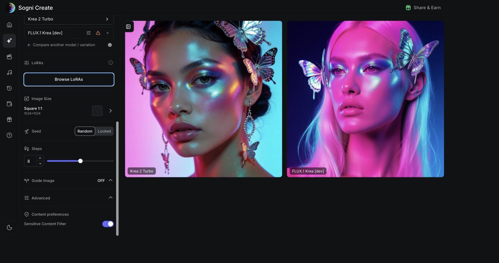
The lower half of the panel: Models, LoRAs, Image Size, Seed, Steps, Guide Image, Advanced and Content preferences with the Sensitive Content Filter.
Setting
What it does
LoRAs
Lightweight add-ons that teach the model a specific style, character or motif. "Browse LoRAs" opens the library, described just below.
Image Size
Aspect ratio and resolution. The default is Square 1:1 at 1024x1024; there is tall 9:16 for stories, wide 16:9 for covers, and more.
Seed
The randomness anchor. Random means every run is different. Locked makes results reproducible, which is what you want when testing small prompt changes on the "same" image.
Steps
Denoising iterations. Turbo models are built for low step counts, and 8 is the sweet spot for Krea 2 Turbo. More steps is not automatically better here.
Guide Image
Image-to-image mode. Add a reference and the generation follows its composition, with a PaintOver strength slider to control how much freedom the model has. Any result can become a guide image in one click (see step 13).
Content preferences
The Sensitive Content Filter, plus the setting that decides whether your work appears in the public "Made with Sogni" gallery.
What the Advanced settings actually do
The Advanced section is the one place in the app where the labels assume you already know diffusion vocabulary. You can safely leave every one of these on its default, but here is what each is for, since these are also the settings you can override per model when comparing (step 10).
Setting
Plain-language explanation
Guidance also called CFG
How strictly the model must obey your prompt. Low values give it creative freedom and more natural images; high values force literal compliance and, pushed too far, produce burned colors and stiff compositions. Each model lists its own sane range, often somewhere between 1 and 7.
Avoid negative prompt
What you do not want to see. Words here are actively pushed away from the result, which is the standard way to suppress recurring problems such as extra fingers, watermarks or text.
Sampler
The algorithm that turns noise into an image, step by step. Euler is the fast, predictable default. The DPM++ family tends to resolve fine detail better at higher step counts, and the ancestral and SDE variants inject extra randomness, so they give more varied results run to run. Changing the sampler changes the look even with an identical prompt and seed.
Scheduler
How the denoising work is spread across those steps, in other words whether the model does the heavy lifting early or late. Simple and Normal are safe defaults; SGM Uniform and Beta shift where the detail lands and pair well with low step counts.
VAE Selection
The decoder that converts the model's internal representation into actual pixels. It mostly affects color and fine texture. Leave it on the model's own VAE unless you have a specific reason.
Preview Count
How many intermediate previews you see while the image renders. Purely cosmetic, it does not change the result.
Format
JPG for smaller files, PNG when you need lossless quality or transparency.
The LoRA library
Click Browse LoRAs and a library opens that is worth exploring on its own. LoRAs are grouped by what they do: Prompt Control, Art Direction (Aberrant, Amateur, Candid, Mystic X, Realism, Realism Engine) and Character (Age, Breast Size, Skin Tone, Weight, Wetness), with more categories further down. Each one shows who made it, a plain-language description of the effect and a link to its Civitai page.
The important control is Strength. Every LoRA comes with a recommended range, for example +0.25 to +1.2, and the slider runs both ways: a negative value applies the opposite effect and zero does nothing. So a "Realism" LoRA at minus strength pushes the image away from realism. You can attach several at once, the counter at the top of the list tracks how many are active, and the Use this prompt link next to the examples loads the prompt that produced the sample images.
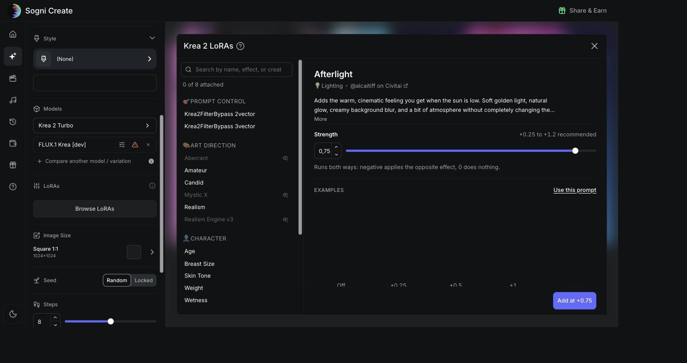
The LoRA library for Krea 2: categories on the left, and on the right the selected LoRA with its description, strength slider, recommended range and example images.
You do not have to guess what a given strength will look like, because the Examples row shows the same scene rendered across the whole slider. Below, the Realism LoRA is displayed at Off, then at -1, -0.5, +0.5 and +1, and you can watch the shot travel from flat illustration at the negative end to a fully photographic frame at the positive end. That is what "a style steering wheel" means in practice.
Once a LoRA is attached it appears in the Create panel with its own strength slider and the recommended range printed underneath, so you can adjust it without reopening the library. The button below turns into Manage LoRAs with a counter such as 1/5, which tells you how many are active and how many the model will accept at once. Inside the library, the attached one is marked with a dot in the list and the button on the selected LoRA changes from Add to Remove.
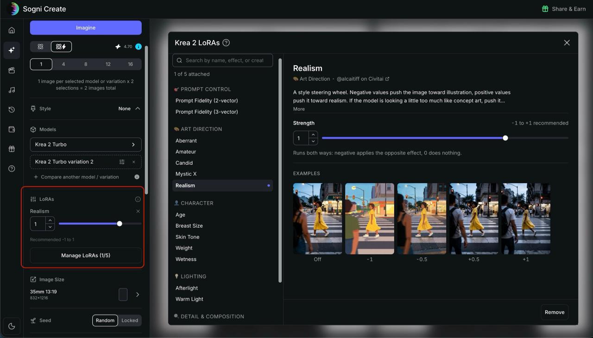
The Realism LoRA at Off, -1, -0.5, +0.5 and +1, with the attached LoRA and its slider visible in the panel on the left, plus the Manage LoRAs counter.
Pro tip: LoRAs are model-specific, so the library shows the ones built for the model you have selected. Start at the recommended strength, generate a batch of 4, and only then push the slider up or down. And remember the negative half of the slider is a feature, not a mistake: a Realism LoRA at -1 is the fastest route to a clean illustrated look.
12Hit Imagine
Click Imagine and the workspace fills with tiles, one per image in your batch. Each tile shows a live step counter, an ETA and the name of the Supernet worker rendering it. You can cancel at any point while it runs.
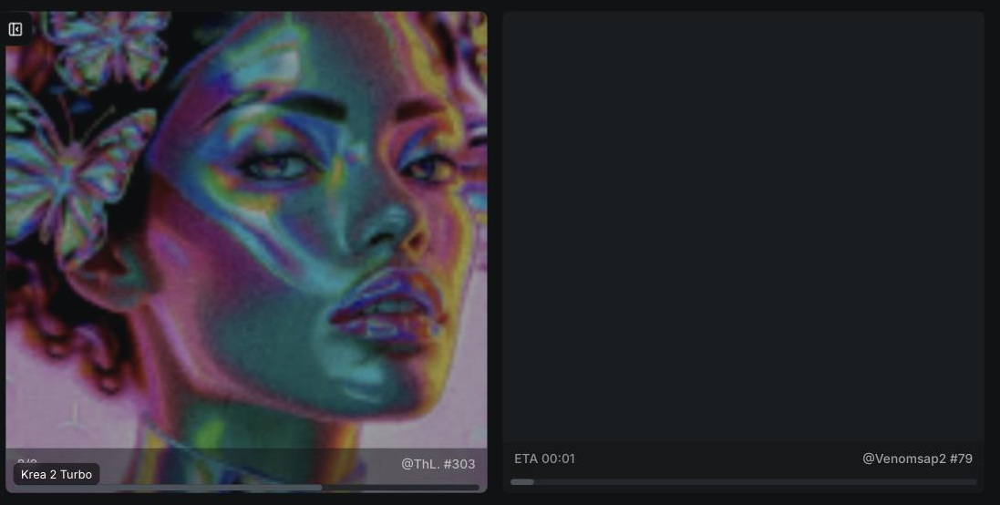
Rendering in progress. Highlighted in red: the step counter, the ETA and the name of the Supernet worker rendering each tile.
A few seconds later the batch is done. The neon prompt with the Magic Neon style on Krea 2 Turbo delivered four variants: one idea, four takes on composition and color.
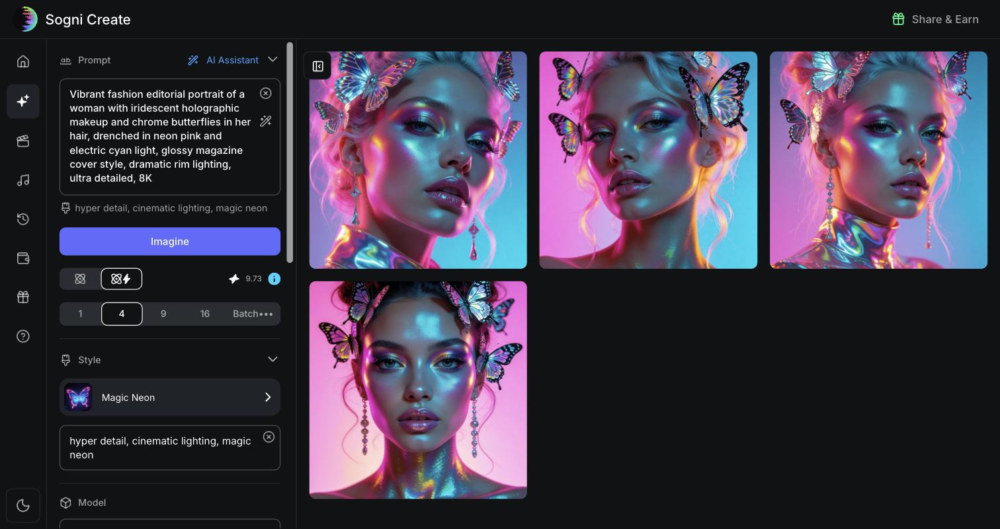
Four holographic butterfly portraits from a single click.
13Working with a finished image
Click an image to open the full-screen viewer. The action bar covers the essentials: Perspective, Enhance, Make a Video and Save, and the side arrows flip through the batch.
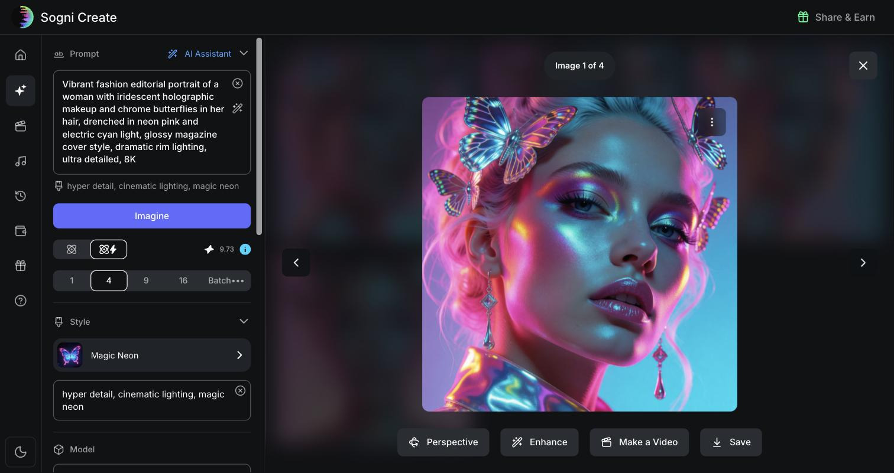
The viewer, showing image 1 of 4, with the main actions underneath.
The three-dot menu in the corner of the image holds the full toolkit. Every entry is a different way of continuing from the picture you just made.
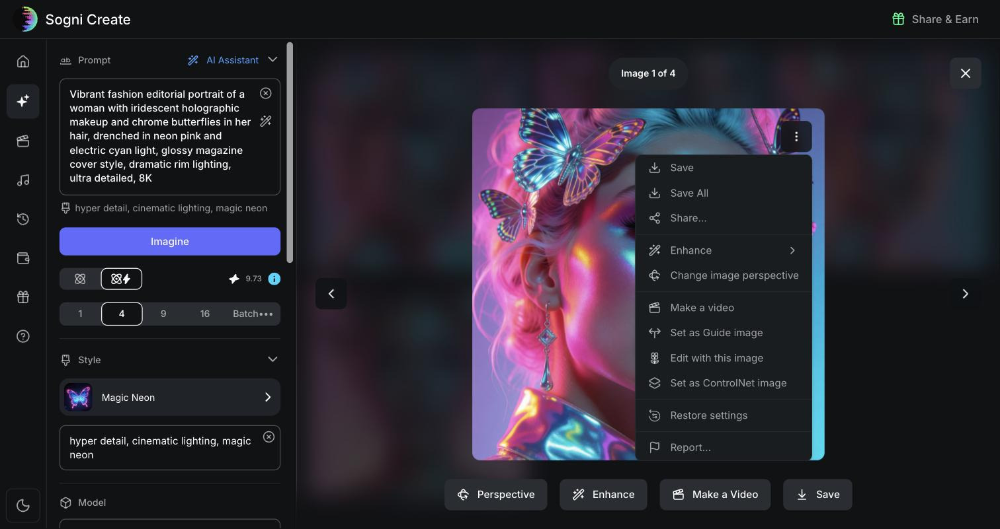
The three-dot menu turns any result into the starting point of your next creation.
Menu item
What it does
Save / Save All
Downloads this image, or the entire batch in one go, to your computer. Use this early: see the retention warning in step 16.
Share
Creates a shareable link to the result so you can post it or send it to someone without downloading first.
Enhance
Upscales and refines the image, adding resolution and detail. The submenu arrow lets you choose the enhancement level.
Change image perspective
Re-renders the same scene from a different camera angle while keeping the subject and style, which is the quickest way to get a second shot of the same character or product.
Make a video
Sends the image straight into Image to Video, so your still becomes an animated clip without leaving the flow.
Set as Guide image
Feeds the image back into the Create panel as the guide for your next generation, so new prompts inherit its composition. This is how you iterate on a look instead of starting over.
Edit with this image
Opens the image in Image Editing, where you can inpaint, extend or restyle it with a text instruction.
Set as ControlNet image
Uses the image as a structural control reference, so the next generation follows its pose, edges or layout much more strictly than a guide image does.
Restore settings
Reloads the exact prompt, style, model, seed and every setting that produced this image. Perfect when you find an old favorite and want to make more like it.
Report
Flags the result to the Sogni team if something has gone wrong with it.
Pro tip: the "generate, pick the best, Make a Video" pipeline is the fastest route to scroll-stopping content. Nail the perfect frame first, then bring it to life.
The default and the best all-rounder: fast, affordable open-source generation with native audio, so your clip arrives with sound already on it. Covered by the Supernet.
The open-source specialist for motion transfer and character animation. Reach for it when a character needs to move convincingly. Covered by the Supernet.
Premium model with flexible multi-image reference support, so you can feed it several references and keep a consistent character or product.
1080p, 24fps
The four video engines with their resolution and frame-rate badges. The badge marks the two premium commercial models.
The workflows
The Workflow type selector at the top of the panel switches between six ways of making a video. The three core ones are text to video, image to video and video to video, and the rest are specialized variants of the last.
Workflow type
What it does
Text to Video
Write a prompt to turn your ideas into a video.
Image to Video
Animate a starting image into a video while preserving its look.
Sound to Video
Generate an audio-reactive video from a sound clip.
Reference to Video
Blend multiple reference images into a single video.
Motion Transfer
Transfer motion from a driving video to your character or image.
Replace Subject
Keep the original scene and swap the subject for your character.
Text to Video (T2V). You start from nothing but words. Write a flowing paragraph of four to eight sentences covering scene, action, character and camera movement in cinematic terms, and the model builds the whole shot. This is the most creative and the least predictable of the three: you get total freedom over the world you describe, but no control over what the subject looks like. Use it for establishing shots, abstract or stylized content, and anything where no specific person or product has to appear. The AI Screenwriter toggle rewrites your rough idea in proper cinematic language, and the header links to the LTX-2 Prompting Guide.
Image to Video (I2V). You start from a still, and the model animates it while preserving its look and composition. This is the workhorse for brand and social content because the first frame is already exactly what you approved: generate the perfect image in Create, then animate it. Character, color and framing stay locked, and the prompt only describes the motion. If you want your video to look like a specific thing, start here rather than with text to video.
Video to Video (V2V). You start from an existing clip and change something about it while keeping its timing and movement. In Sogni this splits into purpose-built workflows: Motion Transfer takes the motion from a driving video and applies it to your character or image (a dance, a walk cycle, a gesture, performed by someone else); Replace Subject keeps the original scene, lighting and camera move and swaps only the subject for your character; Reference to Video blends several reference images into one video; and Sound to Video drives the visuals from an audio clip, which is what you want for music-reactive pieces.
The rest of the panel mirrors Create: a prompt box, a Speed / Quality toggle, batch size, the live Spark estimate, Voice Transfer (drop in an audio file to carry a voice into the clip), Video Size, Frames per second (24, 25, 30, 50 or 60), Duration, Steps, Guidance, Sampler, Seed and a Generate Audio switch for models that produce native sound.
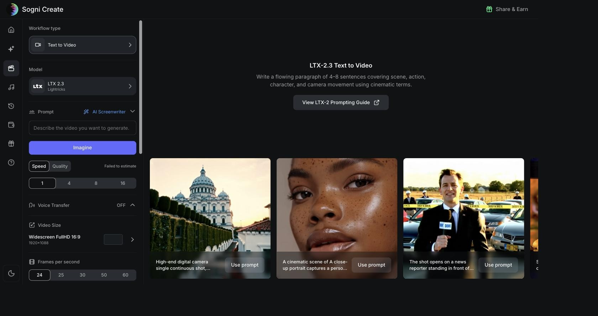
The LTX-2.3 Text to Video workspace. The Workflow type selector sits at the very top, and the strip along the bottom holds example videos whose prompts you can load with one click.
The music studio runs on Ace-Step 1.5 XL (with Ace-Step 1.5 also selectable) and it is a proper studio rather than a single prompt box. A full track costs on the order of one Spark, which makes experimenting essentially free.
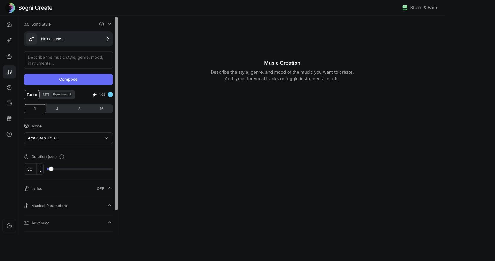
The Music Creation workspace: Song Style, description, Compose, quality mode, batch size, Model, Duration, Lyrics, Musical Parameters and Advanced.
Song Style presets
Rather than guessing at genre vocabulary, open Pick a style and browse the preset library. Each preset is a genre with its production recipe spelled out, for example Afro-Cuban ("conga drums, timbales, montuno piano, brass section, son clave rhythm, tropical energy"), Afrobeats, Alternative Rock, Amapiano, Ambient Electronic, Bedroom Pop, Cloud Rap or Dance Pop. Selecting one fills the description box with those keywords, which you can then edit freely.
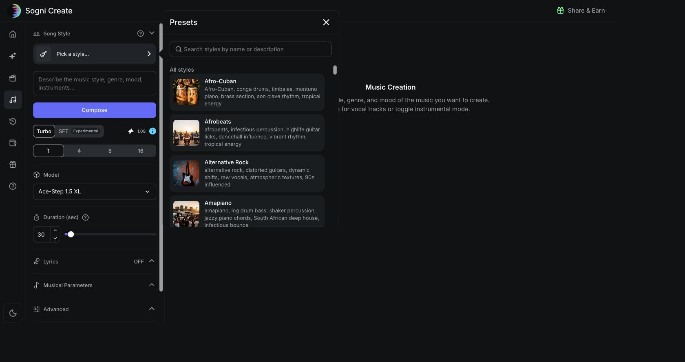
The preset library, searchable and illustrated. Picking a genre drops its full keyword recipe into the description box on the left, where you can edit it freely.
What you can control
Control
What it does
Turbo / SFT
Quality mode. Turbo is the fast default; SFT is an experimental fine-tuned mode for a different character of output.
Batch size
1, 4, 8 or 16 tracks from the same brief, so you can pick the take you like instead of regenerating one at a time.
Duration
Track length in seconds, set with a slider or typed directly.
Lyrics
Switch on to write your own lyrics for a vocal track, or leave it off for an instrumental. There is a Language selector with more than fifty options, from English, Spanish and Polish through Japanese, Korean and Hindi to Latin and Sanskrit, so the vocal is sung in the language you intend.
Musical Parameters
Real musical direction rather than vibes: Tempo, Time Signature (2/4, 3/4, 4/4 or 6/8) and Key, with every major and minor key available if you need the track to sit alongside existing material.
Advanced
Creativity (how far the model strays from the brief), Steps, Shift, and the output Format: MP3, WAV or FLAC. Choose WAV or FLAC if the track is going into an edit.
The result
Press Compose and the track renders on the Supernet just like an image, with an ETA and the worker name on the tile. When it is done you get an inline player with a waveform, so you can listen immediately, scrub through the track and download it from the three-dot menu without leaving the page.
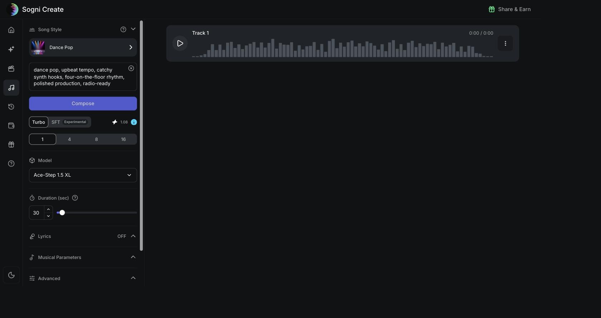
A finished Dance Pop track, generated in seconds for about one Spark, with the waveform player ready to play.
Every generation, whether image, video or music, lands in Recent Projects, grouped by model and creation time. The info icon shows generation details and the trash icon removes a project.
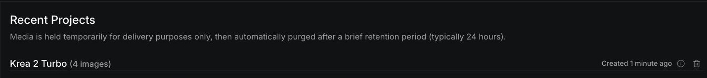
Recent Projects, with batches grouped by model, newest first.
Important: media is held temporarily for delivery only and is automatically purged after a brief retention period, typically 24 hours. Anything you want to keep should be saved right away with Save or Save All.
Generations run on Spark Points, the platform's compute credits. The Wallet page shows your balance (settled, pending credits and pending debits), a SOGNI Token / Spark Points switch, an on-chain wallet on the Base and Etherlink networks for sending and receiving tokens, your full account history line by line, your creator Leaderboard ranking, and a Discord link. Buy Premium Spark tops up by card, and Premium Spark is what unlocks the Premium-badged models from step 9.
If you create a lot, Sogni Unlimited removes per-render costs entirely: unlimited fair-use generation across image, video, music and LLM, from $20 a month, with Unlimited Pro from $50 a month. Full tiers are on the pricing page.
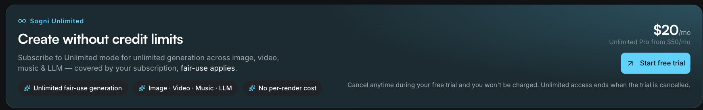
Sogni Unlimited: create without credit limits. Cancel any time during the trial and you will not be charged.
Try Sogni Unlimited free for 3 daysEvery new user can start a 3 day free trial of Unlimited: unlimited fair-use generation across image, video, music and LLM, with no per-render cost. Cancel any time during the trial and you will not be charged.
Spark Points versus the SOGNI token: Spark are compute credits for rendering, simple and stable. SOGNI is the ecosystem's on-chain token on Base and Etherlink, and it is also what rewards the GPU operators powering the Supernet. The Wallet page lets you view and transfer both.
18Rewards and Share & Earn
Sidebar > Rewards, or the "Share & Earn" button in the header
The Rewards page is free Spark. There is a Monthly Boost of 400 Spark (spend some free Spark first, then come back and claim it), a welcome reward of 100 Spark on Etherlink after you confirm your email, card top-ups through Buy Premium Spark, and the Share & Earn referral program. Friends who sign up with your link get bonus Spark, you earn bonus Spark after their first purchase, and you collect Sogni Ambassador Points on every Spark purchase made anywhere in your referral network. Your personal link and a ready-made post are both there to copy.
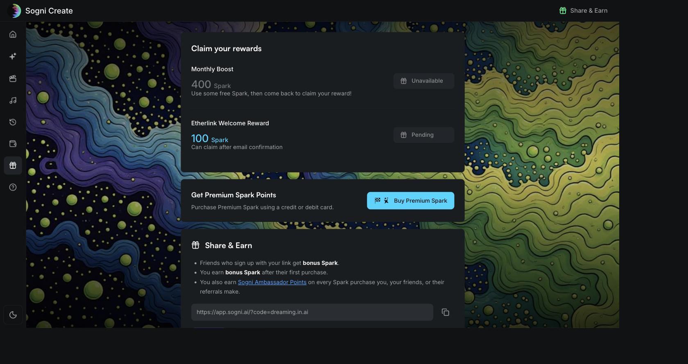
Claim your rewards: Monthly Boost, welcome rewards, Premium Spark top-ups and the Share & Earn program.
And do not forget the free Unlimited trialOn top of the Spark rewards above, every new user can try Sogni Unlimited free for 3 days, with unlimited fair-use generation across image, video, music and LLM. Start it at sogni.ai/unlimited.
FAQ
Do I need to pay to start?
No. Signing up is free and comes with free Spark, and the Rewards page keeps topping you up. Many excellent models, including Krea 2 Turbo, need no premium top-up at all, and you can try Unlimited free for 3 days.
How do I know what a generation will cost?
The Spark figure next to Imagine or Compose is a live estimate, always visible before you click. It scales with batch size, resolution, model tier and processing speed, and the info button shows the exact breakdown alongside your balance.
What is the difference between the two processing icons?
They pick which Supernet lane renders your job. The plain icon is the Relaxed Supernet, the cheap lane where your job waits for a free worker. The lightning icon is the Fast Supernet, the priority lane at roughly double the price. Output quality is identical, so you are paying for speed. Some newer models are published only to the Fast Supernet, and the app offers a one-click switch when that applies.
Which models cost extra?
Models with the green Sogni mark run on the Supernet and are covered by your Spark balance or an Unlimited subscription. Models with a Premium badge, such as Seedance 2.0 and HappyHorse 1.1, are commercial models billed on top and need Premium Spark.
Text to video or image to video?
Use image to video whenever the video has to look like something specific, because you approve the exact first frame before anything moves. Use text to video for open-ended, stylized or establishing shots where no particular subject has to appear.
Why did my files disappear?
Recent Projects stores media temporarily, around 24 hours. Download what you love immediately, and use Save All to grab a whole batch at once.
Which model should I start with?
Krea 2 Turbo. It is fast, it looks good out of the box, and it is cheap. Then use Compare another model to find your own favorite.
What is the Supernet?
Sogni's decentralized GPU network. Independent operators worldwide render your jobs and earn rewards for doing so, which is why worker names appear on your tiles while they render and why prices stay low.
Made on Sogni. Now go make something.
Ready to make something
Open the app and run your first prompt.
Signing up is free and comes with Spark to spend. If you create a lot, Sogni Unlimited removes per-render costs entirely, with a 3-day free trial.
 Creative Agent · Claude
Creative Agent · Claude